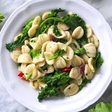
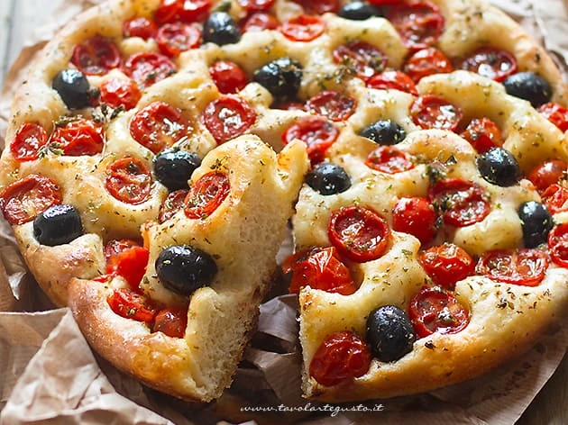
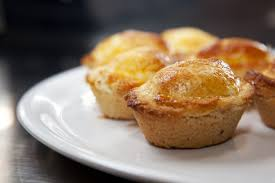

Orecchiette e Cime di Rapa
L'anima della cucina pugliese: pasta fresca di semola, cime di rapa tenere, acciughe e un pizzico di peperoncino.
Vai alla Ricetta
Focaccia Barese
L'irresistibile croccantezza dei bordi unita alla morbidezza dell'impasto con patate, pomodorini e olive.
Vai alla Ricetta
Pasticciotto Leccese
Un guscio dorato di pasta frolla che nasconde un cuore cremoso. Il dolce risveglio tipico del Salento.
Vai alla Ricetta